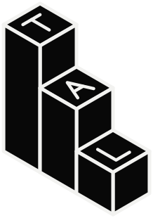
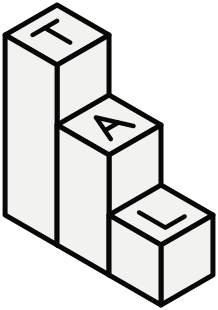
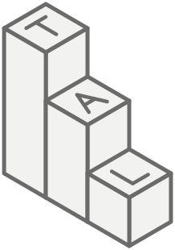

A Totally Accurate Labs (T.A.L.) nasce com a proposta de ser precisa e completa em tudo o que faz — da aparência e da usabilidade dos produtos à arquitetura, ao código e aos resultados técnicos.
A empresa não deve ser reconhecida apenas pelo que diz ser, mas pelo padrão que aplica. Sua filosofia precisa aparecer em cada decisão: no que é construído, no que é priorizado, no que é corrigido e até no que é recusado.
A ideia central é simples: nada deve existir sem propósito, e nada importante deve ser feito pela metade.
Assinatura filosófica principal: THINK LIKE T.A.L.
A expressão aproveita o sentido de “agir/pensar como tal” em português. Não é apenas um slogan em inglês: é um chamado para pensar, decidir e agir de acordo com o padrão que a T.A.L. representa.
| Frase | Papel | Função |
|---|---|---|
| THINK LIKE T.A.L. | Assinatura | A filosofia: adotar o padrão T.A.L. em cada decisão. |
| MADE BY T.A.L. | Selo | A autoria: identifica os produtos desenvolvidos pela empresa. |
| EVERYTHING HAS A REASON. | Frase de apoio | A crença que explica a assinatura. Acompanha THINK LIKE T.A.L.; não aparece sozinha. |
A marca tem uma assinatura e um selo — e só. Novas frases de efeito não são criadas para campanhas ou produtos: uma frase só entra no sistema se substituir outra, com motivo registrado.
“If it can be done right, there is no reason to do it halfway.”Se pode ser feito corretamente, não existe motivo para fazê-lo pela metade.
Completude não significa colocar centenas de botões na tela. Significa oferecer todas as capacidades relevantes e organizá-las de maneira que o usuário consiga encontrá-las e entendê-las.
Pensar como T.A.L. é assumir responsabilidade pelo resultado, questionar decisões automáticas e não confundir aparência de qualidade com qualidade real. É buscar a solução mais correta para o problema — não necessariamente a mais fácil, a mais chamativa ou a mais curta.
Não significa afirmar que a empresa é infalível ou superior a todos. Significa trabalhar com rigor, reconhecer limitações, corrigir falhas e não aceitar erros evitáveis como parte normal do processo.
| Comportamento | Aplicação |
|---|---|
| Entender antes de executar | Identificar o problema real, os requisitos e as consequências. |
| Questionar cada escolha | Toda função, elemento visual e decisão técnica deve ter uma justificativa. |
| Não entregar pela metade | Concluir, testar e documentar o que foi prometido. |
| Não esconder limitações | Ser transparente sobre o que funciona, o que não funciona e por quê. |
| Buscar a solução correta | Comparar alternativas por qualidade, segurança, clareza e manutenção. |
| Aprender com falhas | Registrar, investigar, corrigir e evitar que o mesmo problema se repita. |
| Princípio | Significado |
|---|---|
| 01 PRECISION | Precisão. Funcionalidades, cálculos, comportamentos e resultados devem ser consistentes, verificáveis e previsíveis. |
| 02 COMPLETENESS | Completude. Não omitir recursos relevantes nem entregar funcionalidades incompletas — e não adicionar opções sem propósito. |
| 03 SIMPLICITY | Simplicidade. A complexidade pode existir internamente; a experiência deve ser clara e fácil de compreender. |
| 04 INTEGRITY | Integridade. Não prometer o que não é entregue, não esconder limitações e não inventar capacidades. |
| 05 EVOLUTION | Evolução. Projetar para manutenção, compatibilidade, expansão e melhoria contínua. |
A direção visual é industrial, tecnológica, minimalista e geométrica. A marca deve evitar clichês tecnológicos sem significado — como circuitos aleatórios, cérebros artificiais e símbolos genéricos. O logotipo deve ser reconhecível pela forma e pela tipografia, inclusive em tamanhos pequenos.
Destaque. A marca usa o mesmo azul do T.A.R.K.A.S.: Ice sobre fundo escuro e Deep Teal sobre fundo claro, onde o Ice não tem contraste. O destaque marca o que está ativo ou pronto e os pontos de atenção — nunca é decoração. O logo não usa o destaque: ele é sempre de uma cor só.
| Combinação | Contraste | Regra |
|---|---|---|
| White sobre Black | 17,9:1 | Texto de qualquer tamanho. |
| Ice sobre Black | 13,4:1 | Destaques, indicadores e títulos curtos. |
| Deep Teal sobre White | 5,5:1 | Destaques sobre fundo claro (WCAG AA). |
| Gray #6B6B6B sobre White | 4,8:1 | Texto secundário (WCAG AA). |
| Gray #8C8C8C sobre Black | 6,0:1 | Texto secundário (WCAG AA). |
| Ice sobre White | 1,3:1 | Proibido. Sobre fundo claro, o destaque é sempre Deep Teal. |
Distribuição: preto e branco dominam a identidade; o destaque ocupa no máximo cerca de 5% de qualquer composição. Tons intermediários (linhas, divisores, estados) são obtidos por opacidade das cores base — nunca por cores novas.
A sigla é a escada. Três blocos isométricos, desenhados só com linhas de espessura única, formam o símbolo. No topo de cada bloco está uma inicial, desenhada no mesmo traço: T no mais alto, A no do meio, L no da frente — a escada desce soletrando a marca. Os blocos são as três camadas dos produtos (ENGINEERING, ADVANCED, ESSENTIAL). O símbolo é sempre de uma cor só. Ao lado, o nome empilhado repete a mesma coluna de iniciais.


Composições. Principal: símbolo com o nome empilhado (capas, site, apresentações). Horizontal: símbolo com “T.A.L.” em uma linha (cabeçalhos e rodapés). Símbolo sozinho: ícone de app e avatar.
Área de proteção. Nenhum elemento entra a menos de x ao redor do símbolo, sendo x a largura de um bloco.
Tamanho mínimo. Com as letras: 48 px de altura em tela, 12 mm impresso. Abaixo disso, usa-se a versão só com os blocos, até 16 px.
A T.A.L. não desenvolve interfaces apenas para impressionar. Desenvolve interfaces para funcionar. A experiência pode ser organizada em três camadas, sem dividir o produto em versões artificialmente limitadas:
| Camada | Objetivo | Conteúdo |
|---|---|---|
| 01 ESSENTIAL | Simplicidade | Ações principais, controles intuitivos, informações essenciais e fluxo direto. |
| 02 ADVANCED | Controle | Configurações detalhadas, parâmetros adicionais, personalização e controles avançados. |
| 03 ENGINEERING | Transparência técnica | Diagnósticos, logs, métricas, parâmetros internos e ferramentas especializadas. |
Um iniciante deve conseguir tirar uma fotografia sem estudar um manual. Um usuário avançado deve controlar exposição, foco, processamento e gravação. Um usuário técnico deve consultar informações sobre o pipeline de imagem, os codecs, o sensor e os parâmetros de captura. Todos usam o mesmo aplicativo; o que muda é o nível de controle apresentado.
Modelo de marca endossada: cada produto tem nome próprio e é sempre assinado pela T.A.L.
Composição de produto: sigla em Space Grotesk Bold; selo em JetBrains Mono, Technical Gray, abaixo da sigla.
| Produto | Nome por extenso |
|---|---|
| T.A.R.K.A.S. | Totally Accurate Real-Time Kind of Audio System. |
| T.A.P.E.S. | Totally Accurate Picture Engine Studio. |
| Situação | Regra |
|---|---|
| Em texto | Sempre com pontos: T.A.L., T.A.R.K.A.S., T.A.P.E.S. |
| Fim de frase | O ponto da sigla encerra a frase; não se repete o ponto. Ex.: “feito pela T.A.L.” |
| Domínios, perfis, arquivos | Minúsculas e sem pontos: tal, tarkas, tapes. |
| Pronúncia | Como palavra: “tal”, “tárkas”, “têips”. Nunca soletrada. |
| Gênero | Feminino para a empresa (“a T.A.L.”); masculino para os produtos (“o T.A.P.E.S.”). |
A T.A.L. escreve como fala um bom engenheiro explicando algo a quem respeita: com fatos, sem pressa e sem exagero. O princípio de Integridade vale para cada palavra.
| Atributo | Na prática |
|---|---|
| Preciso | Números, fatos e nomes exatos no lugar de adjetivos. “Rápido” não diz nada; o tempo medido diz. |
| Direto | Frases curtas. Primeiro o que aconteceu, depois o que fazer. |
| Honesto | Diz o que não funciona, o que ainda não existe e por quê. |
| Calmo | Sem pontos de exclamação, emojis em mensagens de sistema ou promessas de “revolução”. |
| Evite | Prefira |
|---|---|
| “Ops! Algo deu errado.” | “Não foi possível salvar: o disco está cheio. Libere espaço e tente de novo.” |
| “O melhor áudio do mundo!” | “Latência medida e exibida no painel de diagnóstico.” |
| “Clique aqui” | “Exportar vídeo” |
| “Novidade incrível chegando em breve!” | “Ainda não disponível nesta versão.” |
| “Tem certeza?” | “Excluir 12 gravações? Esta ação não pode ser desfeita.” |
A T.A.L. faz produtos de imagem e de som. Por isso a própria marca precisa ter critério nos dois — e no movimento que os conecta.
| Área | Exigência |
|---|---|
| Arquitetura | Modular, documentada e expansível. |
| Código | Legível, consistente e revisado. |
| Testes | Testes unitários, de integração e de ponta a ponta. |
| Segurança | Proteção de dados considerada desde a arquitetura. |
| Desempenho | Monitoramento, medição e otimização. |
| Compatibilidade | Testes em dispositivos e ambientes reais. |
| Interface | Acessibilidade (WCAG AA no mínimo), consistência e clareza. |
| Documentação | Completa, útil e atualizada. |
| Erros | Tratamento, logs, diagnóstico e recuperação. |
| Atualizações | Compatibilidade e migrações seguras. |
Não basta funcionar uma vez. Ela precisa operar de maneira previsível, ter sido testada, lidar com situações inesperadas, comunicar falhas e não comprometer outras partes do produto.
Uma marca de precisão precisa provar o que diz. Cada produto define, na sua especificação, metas numéricas para as medidas abaixo, mede a cada versão e publica o resultado.
| Produto | O que medir |
|---|---|
| T.A.R.K.A.S. | Latência de ponta a ponta; interrupções de áudio por hora; desvio da resposta em frequência. |
| T.A.P.E.S. | Atraso do obturador; quadros perdidos por minuto de gravação; precisão de cor. |
MADE BY T.A.L. é o selo de autoria; THINK LIKE T.A.L. é a filosofia da empresa. As duas frases não competem: cumprem papéis diferentes.
| Local | Aplicação |
|---|---|
| Tela de inicialização | MADE BY T.A.L. |
| Site / apresentação institucional | THINK LIKE T.A.L. + EVERYTHING HAS A REASON. |
| Sobre o aplicativo | Developed by Totally Accurate Labs. |
| Documentação | T.A.L. Engineering Standards. |
| Rodapé | © 2026 Totally Accurate Labs · MADE BY T.A.L. |
A T.A.L. deve ser reconhecida pelo padrão que aplica, não por promessas de perfeição. Sua identidade precisa ser percebida na experiência dos produtos, na clareza das interfaces, na qualidade da engenharia e na honestidade com o usuário.
THINK LIKE T.A.L. não é uma frase decorativa. É um critério de decisão. Antes de adicionar, remover, publicar ou aprovar qualquer coisa, a equipe deve conseguir responder:
| 01 | Qual é o motivo? |
| 02 | Qual problema resolve? |
| 03 | Como sabemos que foi feito corretamente? |
We believe that technology should be complete, precise and accessible.
Complexity belongs behind the scenes. Simplicity belongs in the hands of the user.
We don’t remove possibilities to make things easier.
We make possibilities easier to understand.
We don’t settle for something that simply works.
We pursue something that works correctly.
Every detail matters. Every function has a purpose. Every result must be reliable.
O manifesto é oficial em inglês. Esta tradução serve de referência e não substitui o original.
PENSE COMO T.A.L.
TUDO TEM UM MOTIVO.
Nós não fazemos as coisas pela metade.
Fazemos com precisão.
Acreditamos que a tecnologia deve ser completa, precisa e acessível.
A complexidade pertence aos bastidores; a simplicidade, às mãos do usuário.
Não removemos possibilidades para facilitar: tornamos as possibilidades mais fáceis de entender.
Não nos contentamos com algo que simplesmente funciona: buscamos algo que funcione corretamente.
Cada detalhe importa. Cada função tem um propósito. Cada resultado deve ser confiável.
Documento-base de identidade corporativa, versão 1.2 (outubro de 2026). Define THINK LIKE T.A.L. como assinatura, MADE BY T.A.L. como selo de autoria e EVERYTHING HAS A REASON. como frase de apoio. Pendente: nome empilhado convertido em contornos e metas numéricas de cada produto.